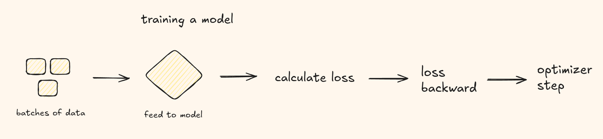
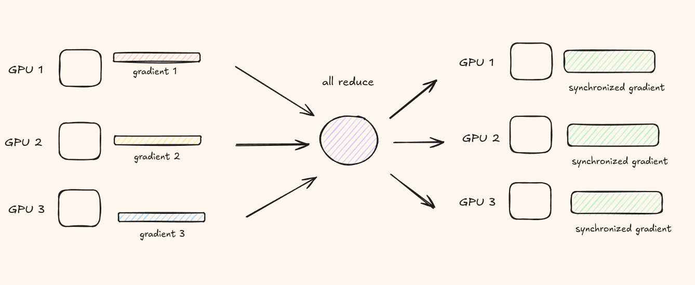
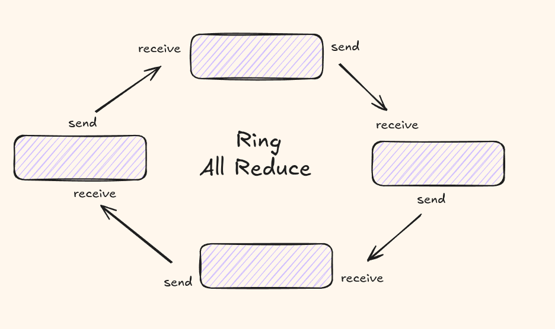

You have a model. Its good. But you want it to be better. That means more data, bigger batch sizes, longer training runs. A single GPU just isnt cutting it anymore.
Distributed Data Parallel (DDP) is a pytorch module that supports multi-machine, multi-GPU, distributed training. The core idea is simple: you replicate your model on every GPU, feed each replica a different slice of the batch, and synchronise gradients at each step so all replicas stay in sync.
In this post we will cover everything you need to know to get started with distributed training using pytorch!
How to think about scaling to multiple GPUs
The scenario for training on multiple GPUs vs inference on multiple GPUs is extremely different. In this post we only focus on training.
We will also turn our focus specifically to data parallelism that pytorch DDP offers. It is the simplest technique to start scaling to multiple GPUs.
I have 10 zillion data samples, and running them on a single GPU is probably going to take years. What if I split the data across the N GPUs I have, and run each split on a model replica running on each GPU.
Hmm, that wont cut it. If they run independently, you end up with N different models instead of one. We need a single model that somehow accumulates knowledge from all the running GPUs.
At this point it is good to remind ourselves of how training a model actually works.
Training a Model

i would describe the flow as follows -
- Create batches of data.
- At each step, feed one batch through the model.
- Get logits, pass through softmax for scores, calculate loss.
- Call loss.backward() to compute gradients.
- Call optimizer.step() to update weights.
Out of these five stages, what do you think has the biggest impact on the models learning? The weight update! It is okay to independently run all the other stages on different GPUs, as long as you sync the gradients before doing the weight update.
DDP does exactly this, it provides a smart way to sync gradients across multiple GPUs and then lets training carry on as usual.
Wait, isnt this just Data Parallelism?
You might have heard of PyTorchs old DataParallel (DP) module.
DP does the same thing conceptually - split a batch across GPUs but it works very differently
under the hood.
- DP uses a single process(due to the GIL interpreter). It slices the input, scatters it to GPUs, computes loss, and broadcasts gradients back. The model is replicated per GPU inside the forward pass. This creates a lot of overhead because the main GPU (rank 0) becomes a bottleneck for communication.
- DDP spawns one process per GPU. Each process has its own python interpreter, its own optimizer, and its own model replica. There is no central coordinator. Gradients are synchronised via all-reduce during the backward pass, completely overlapping with computation.
Gradient Synchronisation and All-Reduce
The core algorithmic primitive behind DDP is all-reduce.
Imagine you have N GPUs. After the forward and backward pass, each GPU holds its own local gradients. The all-reduce operation takes these N tensors (one per GPU) and produces the same reduced tensor on every GPU.

Every GPU ends up with the exact same averaged gradient, applies the same
optimizer.step(), and all replicas stay synchronised.
Ring All-Reduce
A naive all-reduce puts enormous pressure on a single node. Each GPU either waits on a central coordinator or exchanges with every other GPU, creating \(O(N^2)\) communication volume.

Ring all-reduce avoids this bottleneck. The \(N\) GPUs are arranged in a logical ring. Each GPU only talks to its immediate neighbours. The algorithm runs in two phases:
- Each process calculates its gradient independently.
- Each process passes the gradient to the next process in sequence, and then passes the gradient obtained from the previous process to the next process. After looping N times (the number of processes), all processes will have obtained all the gradients.
Basic Terminology
Before writing code, lets get familiar with the key concepts you will encounter in every DDP script.
World Size
Total number of processes participating in the distributed job. If you have 2 machines with 8 GPUs each, world size = 16.
torch.distributed.get_world_size()Rank
A unique identifier (0 to world_size - 1) assigned to each process.. The process with rank 0 is conventionally the master process.
torch.distributed.get_rank()Local Rank
The process index within a single machine. On a machine with 8 GPUs, local ranks are 0 through 7. Machine 1 has local ranks 0-7, Machine 2 also has 0-7. This is handy for assigning each process to the correct GPU device.
int(os.environ['LOCAL_RANK'])Master Address & Port
All processes need to know where the master (rank 0) is to initialise the process group.
These are passed via environment variables:
MASTER_ADDR and
MASTER_PORT.
Backend
The communication library. On NVIDIA GPUs, this is NCCL (NVIDIA Collective Communications Library). For CPUs you would use GLOO or MPI.
Writing a DDP Training Script
Lets put this all together and write a distributed training script.
import os
import torch
import torch.distributed as dist
import torch.nn as nn
import torch.optim as optim
from torch.nn.parallel import DistributedDataParallel as DDP
def setup():
dist.init_process_group("nccl")
torch.cuda.set_device(int(os.environ["LOCAL_RANK"]))
def cleanup():
dist.destroy_process_group()
class ToyModel(nn.Module):
def __init__(self):
super().__init__()
self.net = nn.Sequential(
nn.Linear(1024, 4096),
nn.ReLU(),
nn.Linear(4096, 1024),
)
def forward(self, x):
return self.net(x)
def train():
setup()
rank = dist.get_rank()
local_rank = int(os.environ["LOCAL_RANK"])
world_size = dist.get_world_size()
model = ToyModel().cuda(local_rank)
ddp_model = DDP(model, device_ids=[local_rank])
optimizer = optim.AdamW(ddp_model.parameters(), lr=3e-4)
loss_fn = nn.CrossEntropyLoss()
dataset_size = 10000
microbatch = 32
loader = torch.utils.data.DataLoader(
torch.randn(dataset_size, 1024),
batch_size=microbatch,
shuffle=True,
)
for epoch in range(10):
for batch_idx, (x,) in enumerate(loader):
x = x.cuda(local_rank)
logits = ddp_model(x)
loss = loss_fn(logits, torch.randn_like(logits))
loss.backward()
optimizer.step()
optimizer.zero_grad()
if rank == 0 and batch_idx % 50 == 0:
print(f"Epoch {epoch}, batch {batch_idx}, loss {loss.item():.4f}")
cleanup()
if __name__ == "__main__":
train()-
dist.init_process_group("nccl")initialises the NCCL backend. This readsMASTER_ADDR,MASTER_PORT,WORLD_SIZE, andRANKfrom environment variables. -
Each process sets its CUDA device to its local rank via
torch.cuda.set_device(local_rank). - The model is moved to the correct GPU before wrapping it in DDP.
-
DDP(model, device_ids=[local_rank])tells DDP which GPU this replica lives on. - Only rank 0 handles logging and checkpointing. Other ranks participate purely in computation and communication.
Launching with torchrun
You do not launch a DDP script with a plain python train.py.
Instead, use torchrun, which is the standard entry point for distributed
PyTorch jobs:
torchrun --nproc_per_node=8 train.py
This spawns 8 processes, each with its own
RANK,
LOCAL_RANK, and
WORLD_SIZE environment variables set automatically.
Wrapping Up
With all of this you should be ready to start writing distributed training scripts for LLMs and scale your experiments beyond a single GPU.
In the next couple of blogs, I will focus more on distributed techniques and more production ready libraries like megatron.